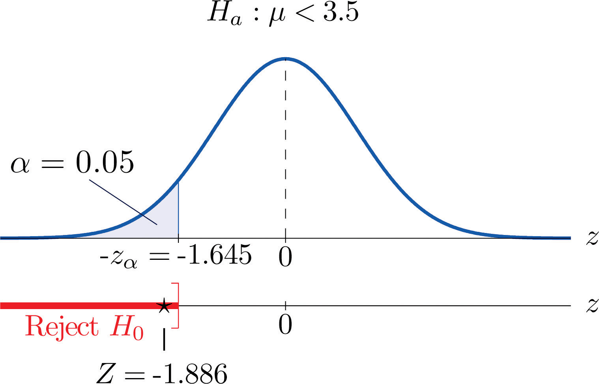
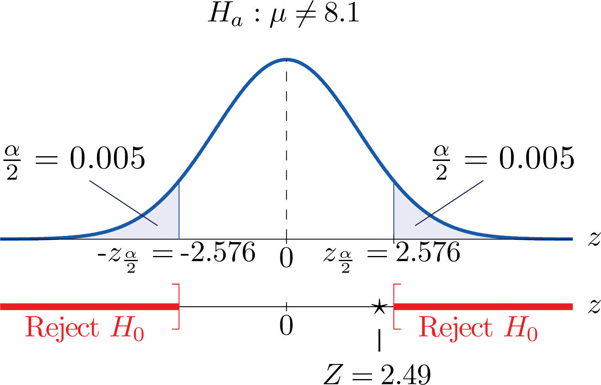

In this section we describe and demonstrate the procedure for conducting a test of hypotheses about the mean of a population in the case that the sample size n is at least 30. The Central Limit Theorem states that is approximately normally distributed, and has mean and standard deviation , where μ and σ are the mean and the standard deviation of the population. This implies that the statistic
has the standard normal distribution, which means that probabilities related to it are given in Figure 12.2 "Cumulative Normal Probability" and the last line in Figure 12.3 "Critical Values of ".
If we know σ then the statistic in the display is our test statistic. If, as is typically the case, we do not know σ, then we replace it by the sample standard deviation s. Since the sample is large the resulting test statistic still has a distribution that is approximately standard normal.
The test statistic has the standard normal distribution.
The distribution of the standardized test statistic and the corresponding rejection region for each form of the alternative hypothesis (left-tailed, right-tailed, or two-tailed), is shown in Figure 8.4 "Distribution of the Standardized Test Statistic and the Rejection Region".
Figure 8.4 Distribution of the Standardized Test Statistic and the Rejection Region

It is hoped that a newly developed pain reliever will more quickly produce perceptible reduction in pain to patients after minor surgeries than a standard pain reliever. The standard pain reliever is known to bring relief in an average of 3.5 minutes with standard deviation 2.1 minutes. To test whether the new pain reliever works more quickly than the standard one, 50 patients with minor surgeries were given the new pain reliever and their times to relief were recorded. The experiment yielded sample mean minutes and sample standard deviation s = 1.5 minutes. Is there sufficient evidence in the sample to indicate, at the 5% level of significance, that the newly developed pain reliever does deliver perceptible relief more quickly?
Solution:
We perform the test of hypotheses using the five-step procedure given at the end of Section 8.1 "The Elements of Hypothesis Testing".
Step 1. The natural assumption is that the new drug is no better than the old one, but must be proved to be better. Thus if μ denotes the average time until all patients who are given the new drug experience pain relief, the hypothesis test is
Step 2. The sample is large, but the population standard deviation is unknown (the 2.1 minutes pertains to the old drug, not the new one). Thus the test statistic is
and has the standard normal distribution.
Step 3. Inserting the data into the formula for the test statistic gives
Step 5. As shown in Figure 8.5 "Rejection Region and Test Statistic for " the test statistic falls in the rejection region. The decision is to reject H0. In the context of the problem our conclusion is:
The data provide sufficient evidence, at the 5% level of significance, to conclude that the average time until patients experience perceptible relief from pain using the new pain reliever is smaller than the average time for the standard pain reliever.
Figure 8.5 Rejection Region and Test Statistic for Note 8.27 "Example 4"
A cosmetics company fills its best-selling 8-ounce jars of facial cream by an automatic dispensing machine. The machine is set to dispense a mean of 8.1 ounces per jar. Uncontrollable factors in the process can shift the mean away from 8.1 and cause either underfill or overfill, both of which are undesirable. In such a case the dispensing machine is stopped and recalibrated. Regardless of the mean amount dispensed, the standard deviation of the amount dispensed always has value 0.22 ounce. A quality control engineer routinely selects 30 jars from the assembly line to check the amounts filled. On one occasion, the sample mean is ounces and the sample standard deviation is s = 0.25 ounce. Determine if there is sufficient evidence in the sample to indicate, at the 1% level of significance, that the machine should be recalibrated.
Solution:
Step 1. The natural assumption is that the machine is working properly. Thus if μ denotes the mean amount of facial cream being dispensed, the hypothesis test is
Step 2. The sample is large and the population standard deviation is known. Thus the test statistic is
and has the standard normal distribution.
Step 3. Inserting the data into the formula for the test statistic gives
Step 5. As shown in Figure 8.6 "Rejection Region and Test Statistic for " the test statistic does not fall in the rejection region. The decision is not to reject H0. In the context of the problem our conclusion is:
The data do not provide sufficient evidence, at the 1% level of significance, to conclude that the average amount of product dispensed is different from 8.1 ounce. We conclude that the machine does not need to be recalibrated.
Figure 8.6 Rejection Region and Test Statistic for Note 8.28 "Example 5"
Find the rejection region (for the standardized test statistic) for each hypothesis test.
Find the rejection region (for the standardized test statistic) for each hypothesis test.
Find the rejection region (for the standardized test statistic) for each hypothesis test. Identify the test as left-tailed, right-tailed, or two-tailed.
Find the rejection region (for the standardized test statistic) for each hypothesis test. Identify the test as left-tailed, right-tailed, or two-tailed.
Compute the value of the test statistic for the indicated test, based on the information given.
Compute the value of the test statistic for the indicated test, based on the information given.
Perform the indicated test of hypotheses, based on the information given.
Perform the indicated test of hypotheses, based on the information given.
In the past the average length of an outgoing telephone call from a business office has been 143 seconds. A manager wishes to check whether that average has decreased after the introduction of policy changes. A sample of 100 telephone calls produced a mean of 133 seconds, with a standard deviation of 35 seconds. Perform the relevant test at the 1% level of significance.
The government of an impoverished country reports the mean age at death among those who have survived to adulthood as 66.2 years. A relief agency examines 30 randomly selected deaths and obtains a mean of 62.3 years with standard deviation 8.1 years. Test whether the agency’s data support the alternative hypothesis, at the 1% level of significance, that the population mean is less than 66.2.
The average household size in a certain region several years ago was 3.14 persons. A sociologist wishes to test, at the 5% level of significance, whether it is different now. Perform the test using the information collected by the sociologist: in a random sample of 75 households, the average size was 2.98 persons, with sample standard deviation 0.82 person.
The recommended daily calorie intake for teenage girls is 2,200 calories/day. A nutritionist at a state university believes the average daily caloric intake of girls in that state to be lower. Test that hypothesis, at the 5% level of significance, against the null hypothesis that the population average is 2,200 calories/day using the following sample data: n = 36, , s = 203.
An automobile manufacturer recommends oil change intervals of 3,000 miles. To compare actual intervals to the recommendation, the company randomly samples records of 50 oil changes at service facilities and obtains sample mean 3,752 miles with sample standard deviation 638 miles. Determine whether the data provide sufficient evidence, at the 5% level of significance, that the population mean interval between oil changes exceeds 3,000 miles.
A medical laboratory claims that the mean turn-around time for performance of a battery of tests on blood samples is 1.88 business days. The manager of a large medical practice believes that the actual mean is larger. A random sample of 45 blood samples yielded mean 2.09 and sample standard deviation 0.13 day. Perform the relevant test at the 10% level of significance, using these data.
A grocery store chain has as one standard of service that the mean time customers wait in line to begin checking out not exceed 2 minutes. To verify the performance of a store the company measures the waiting time in 30 instances, obtaining mean time 2.17 minutes with standard deviation 0.46 minute. Use these data to test the null hypothesis that the mean waiting time is 2 minutes versus the alternative that it exceeds 2 minutes, at the 10% level of significance.
A magazine publisher tells potential advertisers that the mean household income of its regular readership is $61,500. An advertising agency wishes to test this claim against the alternative that the mean is smaller. A sample of 40 randomly selected regular readers yields mean income $59,800 with standard deviation $5,850. Perform the relevant test at the 1% level of significance.
Authors of a computer algebra system wish to compare the speed of a new computational algorithm to the currently implemented algorithm. They apply the new algorithm to 50 standard problems; it averages 8.16 seconds with standard deviation 0.17 second. The current algorithm averages 8.21 seconds on such problems. Test, at the 1% level of significance, the alternative hypothesis that the new algorithm has a lower average time than the current algorithm.
A random sample of the starting salaries of 35 randomly selected graduates with bachelor’s degrees last year gave sample mean and standard deviation $41,202 and $7,621, respectively. Test whether the data provide sufficient evidence, at the 5% level of significance, to conclude that the mean starting salary of all graduates last year is less than the mean of all graduates two years before, $43,589.
The mean household income in a region served by a chain of clothing stores is $48,750. In a sample of 40 customers taken at various stores the mean income of the customers was $51,505 with standard deviation $6,852.
The labor charge for repairs at an automobile service center are based on a standard time specified for each type of repair. The time specified for replacement of universal joint in a drive shaft is one hour. The manager reviews a sample of 30 such repairs. The average of the actual repair times is 0.86 hour with standard deviation 0.32 hour.
Note: All of the data sets associated with these questions are missing, but the questions themselves are included here for reference.
Large Data Set 1 records the SAT scores of 1,000 students. Regarding it as a random sample of all high school students, use it to test the hypothesis that the population mean exceeds 1,510, at the 1% level of significance. (The null hypothesis is that μ = 1510.)
Large Data Set 1 records the GPAs of 1,000 college students. Regarding it as a random sample of all college students, use it to test the hypothesis that the population mean is less than 2.50, at the 10% level of significance. (The null hypothesis is that μ = 2.50.)
Large Data Set 1 lists the SAT scores of 1,000 students.
Large Data Set 1 lists the GPAs of 1,000 students.
, , reject H0.
, , do not reject H0.
Z = 8.33, , reject H0.
Z =. 2.02, , reject H0.
, , do not reject H0.
vs. Test Statistic: Z = 2.7882. Rejection Region: Decision: Reject H0.